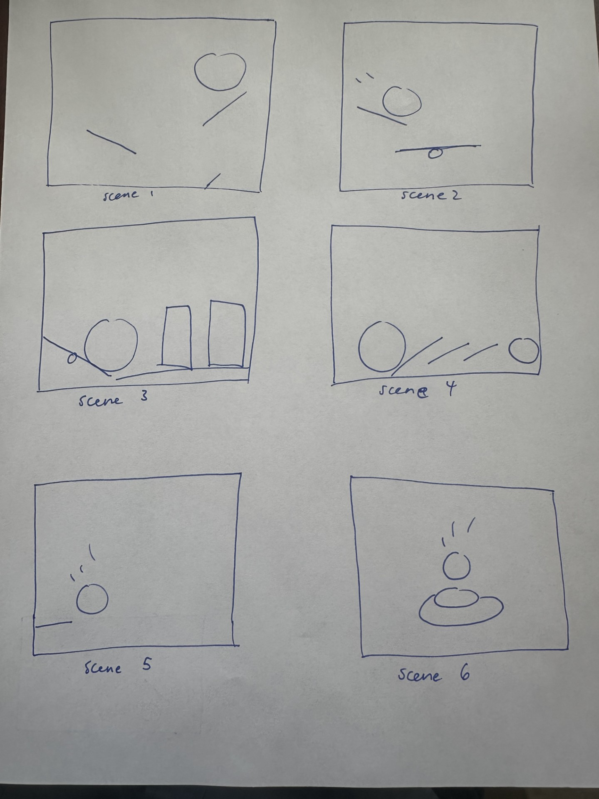

Storyboards & Written Description

Storyboard Frame 1: The ball drops from above the screen, showing anticipation before motion.

Storyboard Frame 2: The ball squashes on impact, emphasizing the weight and force.

Storyboard Frame 3: The ball stretches upward as it bounces back, illustrating elasticity and energy.
Description: This short animation tells the story of a soccer ball that is bouncing away from a big, red bowling ball. As the soccer ball clears the first hole, he turns around to see if the bowling ball is still behind him, and doesn't realize the second hole in the floor. The soccer ball falls through the second hole, and the bowling ball, concerned, turns to look at the audience.